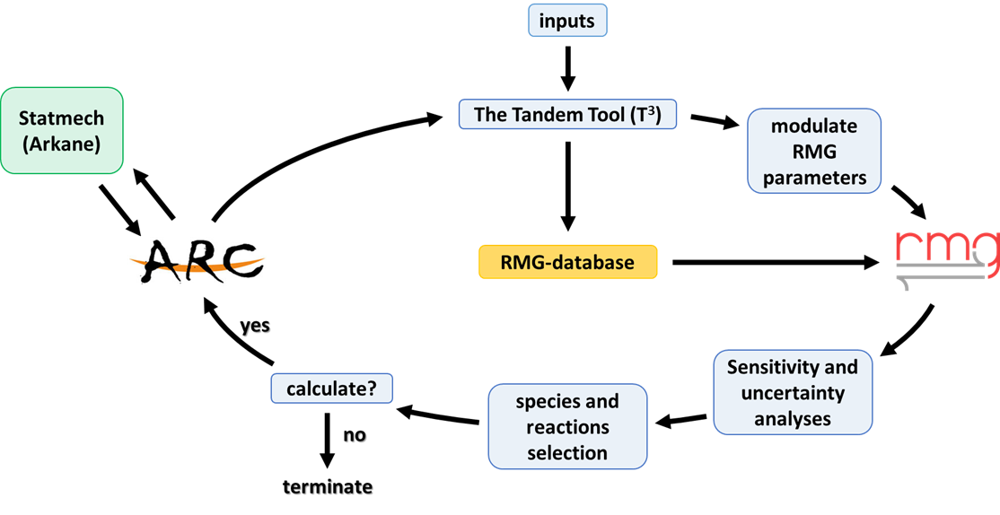

T3 - The RMG-ARC Tandem Tool v0.1.0¶
T3 - The RMG-ARC Tandem Tool is a software for automating kinetic model generation and refinement. T3 is written in Python 3.7 and was made open-source under the MIT license.
We use T3 to facilitate our research and have made it available as a benefit to the community in the hopes that others may find it useful as well. Its code is hosted on GitHub, which is where comments, issues, and community contributions are welcomed.
The following pages describe how to install and execute T3, show some advanced features, and describe what to expect from its output.